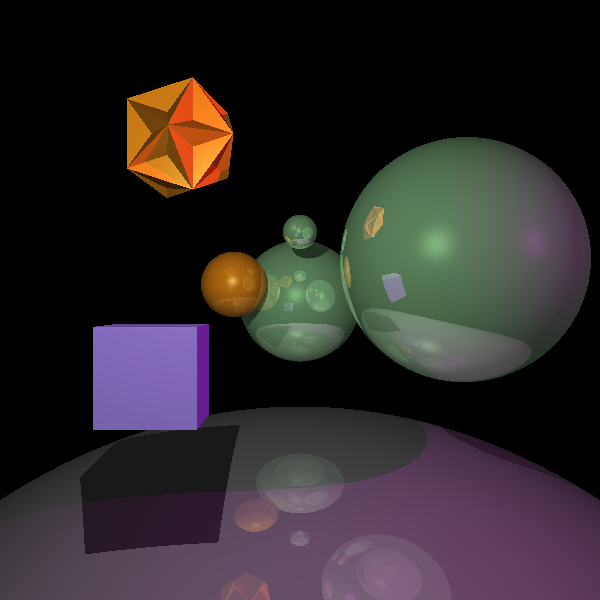

Note how the jagged edges of the polygon vanishe almost entirely, while the curves of the spheres are much smoother. I was so taken aback at the difference that I chose to show this objective first. From now on, unless otherwise stated, all images are anti-aliased.
The images on the left are not anti-aliased, those on the right are:

